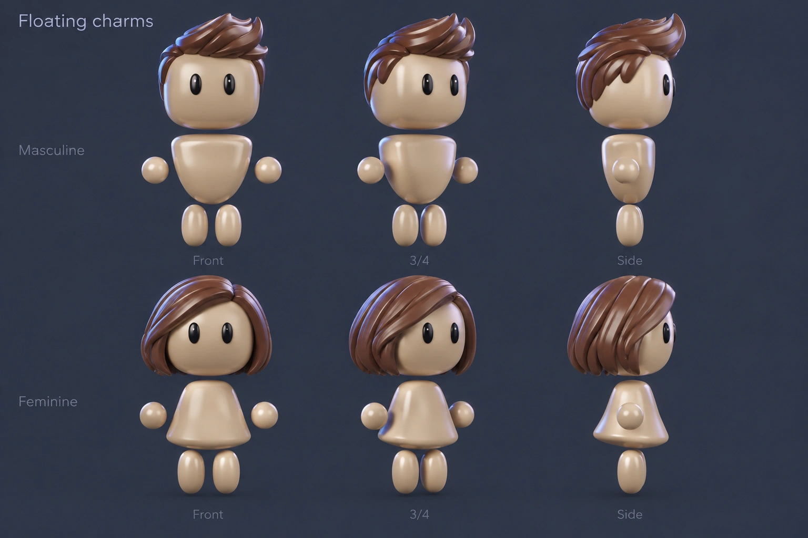
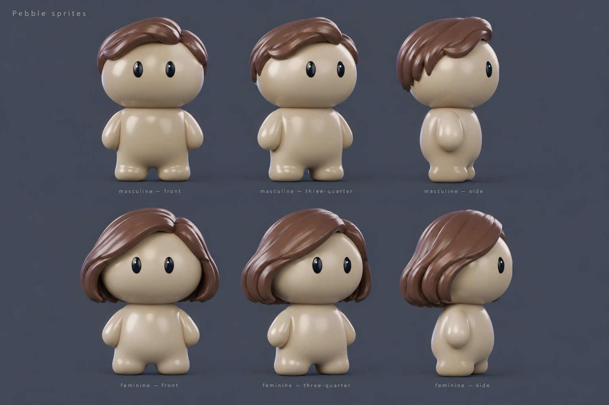

CHARACTER EXPLORATION · 157Three character directions
You preferred156’s softer Tapered silhouette. These explore stronger character identity and a clearer difference between builds, while keeping simple eyes, shiny skin and a cute, silly feel.
AI concept images. These have not replaced the3D models. The angles illustrate the intended direction; they are not a verified3D turnaround. The four accepted skin colors remain unchanged in the existing models.
100%
Soft humanoid · Both builds · All three angles ·100%
Select one build and angle for a closer comparison. Use + to enlarge, then scroll or swipe within the image to pan. Open the full-size PNG for native image zoom.
Soft humanoid
Compare directions
Best balance to develop further. The builds read differently, and the sculpted hair has more personality. I would soften the feminine waist slightly when modeling it.
Clearest distinction between the bodies. Strong small-icon silhouette, but the bell is a more literal dress shape and the square head may be less appealing than154.
Cute and cohesive, but it risks feeling too childlike. The two bodies remain quite similar, so I would not choose it if build distinction is the priority. What I would carry forward
Start with Soft humanoid’s head and hair rhythm. Keep both builds equally prominent. If you want a stronger difference, borrow a gentler version of Floating charms’ lower-body flare. Keep the head and torso close, the hands near the sides and the eyes simple.
The concept generator made some shapes stronger than the brief requested. In particular, the first feminine waist is more pinched than I would model. Pebble sprites is also more childlike and less distinct between builds than intended. Those are tradeoffs to judge, not approved modeling decisions.
These are broad artistic references. Actual geometry, full back/top views, scalp fit, material matching, four-tone renders, hairstyles and accessories would need a new native modeling and review pass after a direction is chosen.
Generation briefs · built-in Image Gen